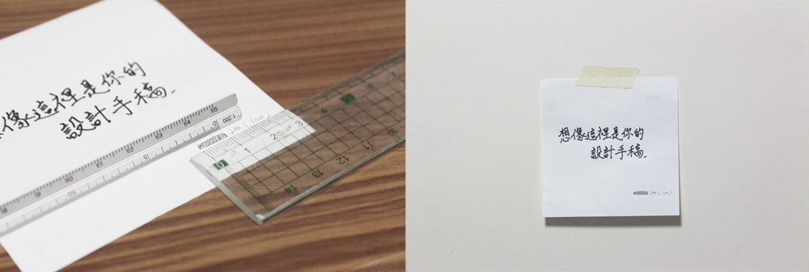
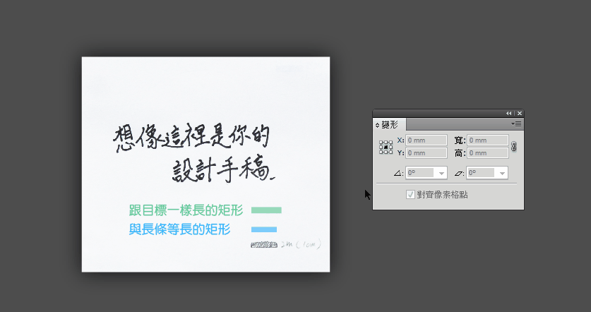
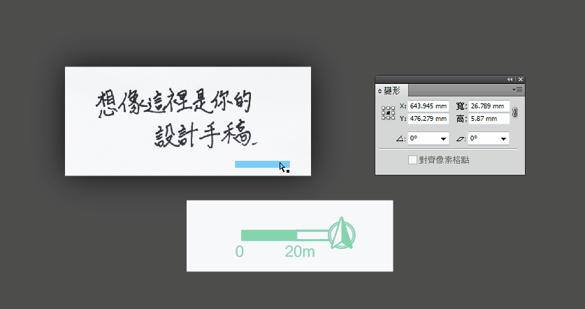
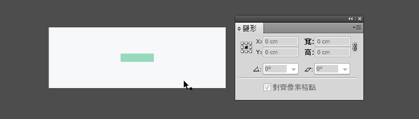
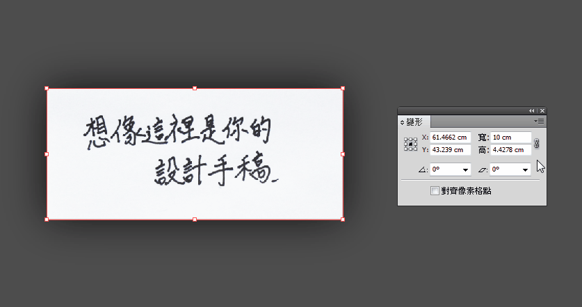

正確的比例尺
手繪圖轉電繪
當手繪完的圖若太大張而無法適用一般掃描機時，可以先畫一段長度標記，再將圖貼到牆上拍照。如此一來就可以免費的到沒有變形的圖(大圖掃描好像是要收費的)

在手繪圖紙上畫一段長度標記
在PS將圖的明暗拉開使線條清楚後，把圖丟進以拉，畫一段跟長條等長的矩形以及跟目標一樣長的矩形。開啟智慧型參考線(ctrl+U)，按著Shift將跟長條等長的矩形等比放大到跟跟目標矩形一樣長，再選圖片按Ctrl+D，圖片就會按剛才的比例放大，而變得跟目標長度吻合。

目標長度是1cm 也就是10 mm
要放大圖但只想要讓比例尺變寬
將一條長軸與圖群組，縮放後複製長軸的寬度到比例尺上，就可以只讓比例尺變寬。

整數比例的比例尺
如果有一個1/600的圖，要在上面放個代表20公尺的長條，可以直接在寬上輸入「20/6 cm」如此一來就會得到所要的長度也就是3.33公分的長條。

若要把1/500的圖改成1/600，只要固定縮放比例，在長或寬的結尾加上「 *5/6 」就可以得到。

有特定比例的圖進排版時不可縮放，排版的軟體都會採用圖片記錄的寬高，不用擔心置入時會跑比例。